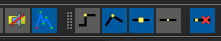
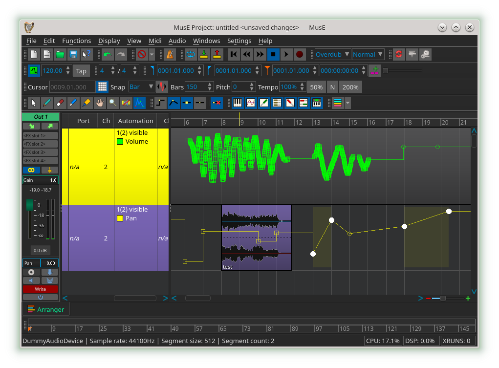
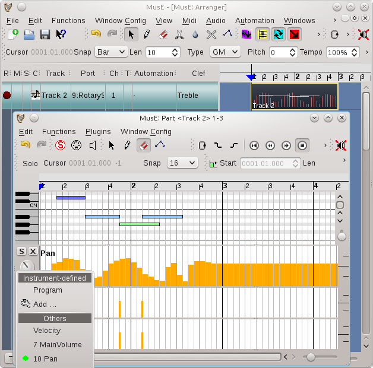

Automation
Automation is the ability to record (or construct) and playback exact sequences of control movements.
MusE can automate both MIDI and audio but they are handled somewhat differently although they share a number of similarities.
Audio automation
Almost all graphical audio controls in MusE can be automated. This includes an audio track’s volume and pan, and the controls of any plugins in the effects rack, and if the track is a synthesizer track, all of the synth’s controls.
Each control has a manual adjustment value. This value is shown when there is no automation data at all, or automation has been disabled.
For plugin and synth controls, it is usually more desirable to manipulate automation with the generic plugin GUIs, because MusE has full control over their behaviour. (See plugin GUIs).
There are a few ways to enter audio automation data:
- By adjusting audio controls while the transport is rolling. MusE will record the exact movements.
- By adjusting audio controls while the transport is stopped, at different transport positions. TOUCH mode allows this.
- By right-clicking any audio control and choosing an operation from the automation popup menu. This includes storing, erasing, and clearing automation events, and seeking the next or previous event.
- By drawing the data on the audio track’s automation graphs. (See track automation).
Audio automation modes
Each audio track strip has an automation mode button at the bottom. There are five automation modes:
- OFF:
Disables all automation, uses manual value always. - READ:
Automation data is applied to controls. If any automation data exists, the manual value is overridden and has no effect. - TOUCH:
Allows you to alter a control at any time, while transport is stopped or rolling, If rolling, when the control is released it returns to reading from automation data. - LATCH:
Allows to adjust an initial value before rolling the transport. While rolling, when the control is released it does not return to reading from automation data. - WRITE:
Similar to LATCH mode but in WRITE mode everything from the start to the end of recording is erased, even if the control was not touched until later - but it must have been touched at least once.
Choose which graphs are shown by right-clicking the Automation column in the track pane.
To draw, edit, or erase points on the graph, first select the Edit Automation tool on the Tools toolbar. Two types of points can be drawn. Discrete, which are flat steps between points, and Interpolated, which are slopes between points. The Automation toolbar has two buttons for that. There is also a button that eliminates redundant recorded straight-line points. Here is the Automation toolbar (with the Edit Automation Tool toolbar button showing to the left):

Selected points can be easily converted between the two types by right-clicking any area on the graph and using the Graphs popup menu item. Note that some controller types might not support interpolation. Discrete points are shown as boxes on the graph while interpolated points are shown as circles. The size of the points is adjustable in the Global Settings > GUI tab.
Here is a screenshot of automation WRITE mode, and some discrete and interpolated automation data with exaggerated point size, and the track pane automation popup menu showing (see track automation):

Two more buttons on the Automation toolbar control whether the points are shown at all. Here they are off:
The graphs fully support copy/paste/cut/delete operations. Selected points on a single graph can be copied and pasted to another graph, even in another track.
Selected points can be dragged around the graph. Holding the control key before dragging creates a copy of them when dropped. Pressing the shift key before dragging restricts motion horizontally or vertically depending on which direction the points are moved. Holding the shift key while dragging the points turns of snapping to the grid, for fine-grained movement.
When points on a graph are dragged and dropped, there is a setting in the graph right-click Graphs menu which determines how existing points are erased underneath the dropped points. No erasing can be chosen, but note that dropping a point directly over an existing point still replaces the existing point with the dropped one. Existing points can be erased between dropped points, but any gaps (unselected points) in the original selected points are not erased underneath the dropped points. A third setting erases everything between the leftmost and rightmost dropped points - even if there were unselected points in between the original selected points.
While dragging points around, depending on the erase setting colored areas may be shown. These indicate what WOULD be erased if dropped. These colored areas allow FURTHER movement of the points after dropping them, WITHOUT erasing anything underneath the drop positions. After dropping the points, the colored areas persist until a blank area is clicked or End Paste Drop Mode is clicked in the context menu. It is only when these colored areas disappear, that actual changes and erasures on the track take place. There is no 'cancel drop' feature since Undo (and Redo) already handle it, remembering the colored areas too.
Here are two groups of points being moved, while the erase mode is normal (respecting gaps):

Midi automation
MIDI automation is a slightly different concept: Unlike audio automation, currently there is no automation ‘mode’ and it doesn’t record graphical control movements. Data is viewed from within the pianoroll and drum editors, by clicking on the ‘Ctrl’ button on those canvases.
Similar to audio controls, each midi control has a manual adjustment value. This value is overridden when there is midi automation data.
There are a few ways to enter MIDI automation data:
- By adjusting external MIDI controls (such as a midi keyboard pitch or modulation wheel) while the transport is rolling and both the transport and midi track are in record mode. MusE will record the exact movements. As mentioned earlier, note that graphical control movements are not recorded.
- By right-clicking any midi control and choosing an operation from the automation popup menu. This includes storing and erasing automation events.
- By drawing the data on a midi part’s automation graphs.
Here is a screen shot of a midi track, containing a midi part which has been opened with the pianoroll editor and automation data showing.
The ‘Ctrl’ popup menu (bottom left) shows available midi controllers and the green dot indicates there is some data.
